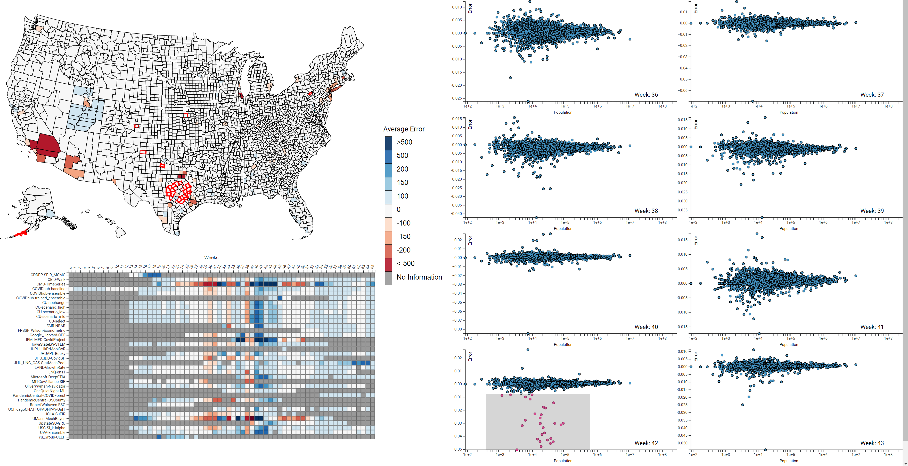

The spread of the SARS-CoV-2 virus and its contagious disease COVID-19 has impacted countries to an extent not seen since the 1918 flu pandemic. In the absence of an effective vaccine and as cases surge worldwide, governments were forced to adopt measures to inhibit the spread of the disease. To reduce its impact and to guide policy planning and resource allocation, researchers have been developing models to forecast the infectious disease. Ensemble models, by aggregating forecasts from multiple individual models, have been shown to be a useful forecasting method. However, these models can still provide less-than-adequate forecasts at higher spatial resolutions. In this paper, we built COVID-19 EnsembleVis, a web-based interactive visual interface that allows the assessment of the errors of ensembles and individual models by enabling users to effortlessly navigate through and compare the outputs of models considering their space and time dimensions. COVID-19 EnsembleVis enables a more detailed understanding of uncertainty and the range of forecasts generated by individual models.